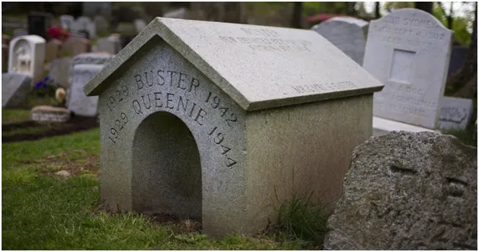
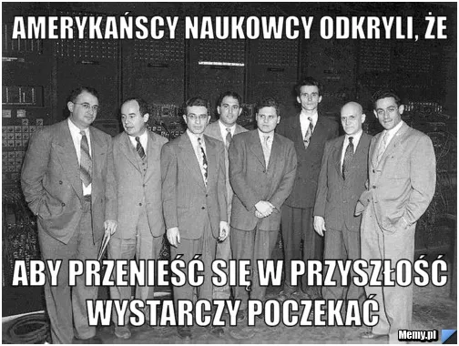

Gdzie jest pies pogrzebany?
Gdzie jest pies pogrzebany?
Idą wybory w USA i sensacji obyczajowych usłyszymy jeszcze mnóstwo. Wszystkie media, które to podają, blokuję bezterminowo, bo ani nie wiemy, czy to prawda, ani nic nam do tego, co ludzie robią u siebie w domu.

"Krótka historia czasu" Hawkinga jest gniotem, bez względu na to, co autor robił w wolnych chwilach. Zostawmy tego biedaka jako człowieka. On był propagandystą głupoty jaka zalewa świat od dekad i tu go punktujmy. Mój sąd w tej sprawie jest stary jak sama książka.
Jak mawiał prof. Wolniewicz 99% książek jest szkodliwa i nadaje się tylko na opał. Jak każdy młody człowiek dałem się wkręcać w różne "izmy", to był czas Ditfurtha, od którego się dowiedziałem, że: "Na początku był wodór". Wtedy nie czułem jeszcze tego w odniesieniu do Janowego "Na początku było Słowo". Kolejny tom tego autora nosił tytuł "Duch nie spadł z nieba", tu już zapaliła mi się lampka, bo wywodzenie ducha z materii to już jest tak prymitywny zabieg, że nastolatek czuje instynktownie dogmatyzm.

Wkrótce dostałem się na "elitarny wydział" socjologii i filozofii UW i tam kurtyna opadła. Byłem już wtedy bardzo dobrze przygotowany z fizyki i zrozumiałem, że całe to lewackie towarzystwo ignorowało odkrycia fizyki kwantowej i cały czas "rozkminiali" paradoks Zenona z Kition, i nawet nie słyszeli, że od 100 lat paradoksu już nie ma, bo czas i przestrzeń nie są nieskończenie podzielne. Nikt tego nie chciał słuchać, co mówię z prof. M. Środą na czele. To byli "humaniści" i tu jest pies pogrzebany. "Humaniści" decydują o percepcji świata przez masy mimo, że jest to obraz niezgodny z empiryczną wiedzą. Na zajęciach z logiki usłyszałem, że "naukowcy" właśnie wymyślają "logikę wielowartościową". Byłem wtedy już po zbudowaniu od podstaw swojego pierwszego mikrokomputera i zrozumiałem, że będąc na uniwersytecie jestem w specyficznym zoo.

Obłędem był "Koniec historii" Fukuyamy, "elity" łykały te bzdury jak młode lemingi. Numer jest zawsze podobny: tytuł musi być "kontrowersyjny", a najlepiej sprzeczny wewnętrznie i do tego promocyjna salwa recenzji ze wszystkich dział kompletu ważnych wydawców prasowych na całym świecie.
"Krótka historia czasu" to doskonały przykład pseudo naukowej "rewelacji". Żaden fizyk nie odważy się definiować czasu, a sam tytuł jest paradoksalny, to czas jest osnową historii i nie może mieć swojej historii. Do tego autor ze skrajną dysfunkcją "wszystkiego" i świat robi "wow" po czym leci do wszelkiej maści "empików", płaci i rujnuje sobie umysł.
To przykład rdzenia głównego nurtu, który tylko pokazuje kierunek. Wokół tego rdzenia orbituje cała galaktyka książek typu "duchowe życie drzew" i innych rewelacji bystrych autorów, piszących takie gnioty pod pseudonimami.
Paweł Klimczewski